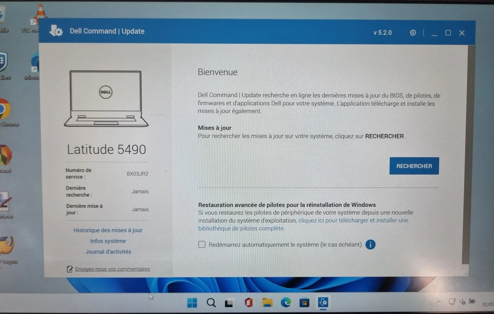

üìã Contexte de la proc√©dure
Après un déploiement SCCM, cette procédure permet de vérifier et réaliser les mises à jour matérielles (Dell) et logicielles (Windows Update) avec les redémarrages nécessaires.
üíª Mises √† jour Dell
Pilotes, firmware, BIOS
ü™ü Windows Update
Mises à jour de sécurité
üîÑ Red√©marrages
Validation post-installation
üéØ D√©clenchement : Cette proc√©dure est initi√©e apr√®s un d√©ploiement SCCM pour garantir que tous les postes sont √† jour mat√©riellement et logiciellement.
⚙️ Procédure de mise à jour post-SCCM
1
Vérification des mises à jour Dell disponibles
Ouvrir l'application Dell Command Update ou accéder au support Dell pour vérifier les mises à jour disponibles.

üîç V√©rification des mises √† jour Dell disponibles
üí° Information : Les mises √† jour Dell incluent les pilotes, le firmware et le BIOS pour optimiser les performances et la s√©curit√©.
2
Installation des mises à jour Dell
Sélectionner et installer toutes les mises à jour Dell critiques recommandées.
⚙️ Installation des mises à jour Dell
⚠️ Important : Certaines mises à jour matérielles nécessitent un redémarrage. Planifier l'installation en conséquence.
3
Vérification des Windows Update
Ouvrir les paramètres Windows et vérifier les mises à jour disponibles dans Windows Update.
ü™ü V√©rification des Windows Update disponibles
üîê S√©curit√© : Les mises √† jour Windows sont essentielles pour la s√©curit√© et la stabilit√© du syst√®me.
4
Installation des Windows Update
Télécharger et installer toutes les mises à jour Windows disponibles.
üì• Installation des mises √† jour Windows
üîÑ Red√©marrage : La plupart des mises √† jour Windows n√©cessitent un red√©marrage pour √™tre finalis√©es.
5
Redémarrage et validation finale
Effectuer le redémarrage final et vérifier que toutes les mises à jour ont été correctement appliquées.
✅ Redémarrage et validation finale
Vérifications post-redémarrage :
✅ Tous les périphériques fonctionnent correctement✅ Aucune erreur dans le Gestionnaire de périphériques
✅ Windows Update indique "À jour"
✅ Dell Command Update ne propose plus de mises à jour critiques
üîë Points de contr√¥le essentiels
✅ Mises à jour Dell : Pilotes, firmware et BIOS à jour
✅ Windows Update : Toutes les mises à jour de sécurité installées
✅ Redémarrages : Effectués après chaque série de mises à jour
✅ Validation : Fonctionnement normal post-redémarrage
✅ Documentation : Mises à jour enregistrées pour traçabilité